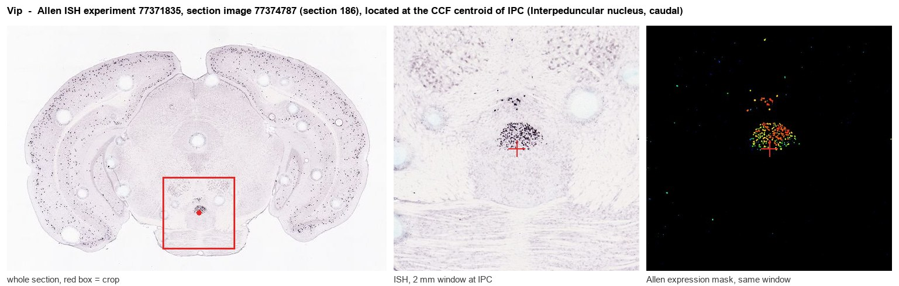
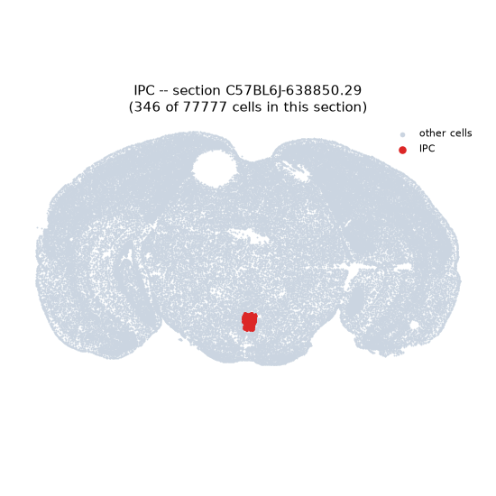
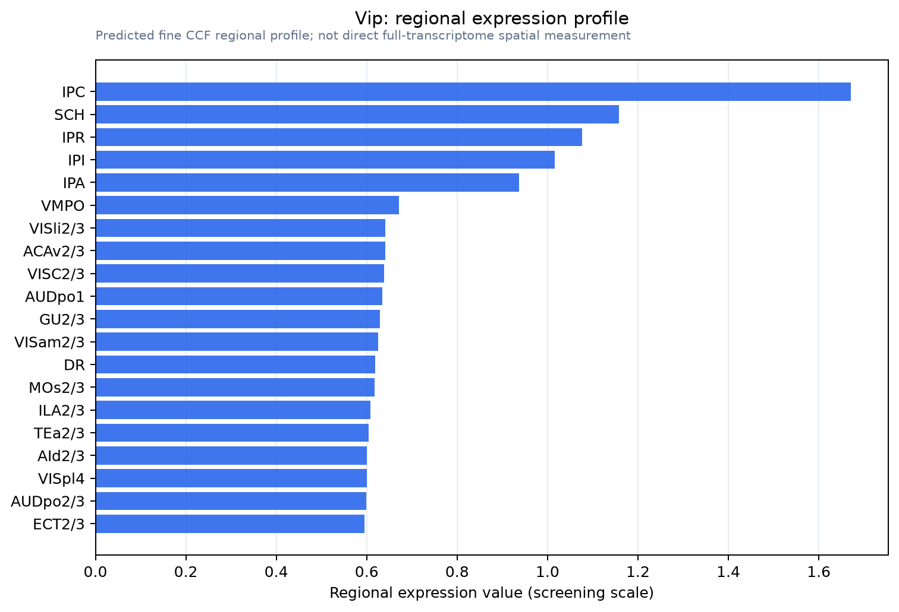

Vip
Spatial tier: STRICT_EXCLUSIVE · Class: OTHER · Top region: IPC (Interpeduncular nucleus, caudal) · Positive regions: 6/554
46.2Discovery Score
39.2Targetability Score
CEvidence grade C
What this means: Vip: predicted fine-region profile is strict-exclusive, with 6 positive regions out of 554 (limit 12); direct spatial validation is required.
Function in IPC: evidence, prediction, innovation
- Gene function
- Vip encodes vasoactive intestinal peptide, a 28-residue secretin/glucagon-family neuropeptide cleaved from a precursor that also yields PHI/PHM. VIP signals through the Gs-coupled GPCRs VPAC1 and VPAC2, raising cAMP and PKA activity in target cells. In brain it is a slow excitatory/disinhibitory modulator, best known in cortical interneurons and in suprachiasmatic circadian coupling.
- Region function
- The interpeduncular nucleus is the main target of the medial habenula and a hub for cholinergic/substance-P signalling controlling nicotine aversion, withdrawal and anxiety; the caudal subnucleus (IPC) sits at the core of this habenulo-interpeduncular circuit and projects to raphe and tegmental nuclei.
- Published in this region
- expression only Hamill and Lenn 1984 mapped peptide immunoreactivity across rat IPN subnuclei and found VIP-positive fibres and terminal fields with a subnucleus-specific distribution, concentrated dorsally/caudally rather than uniformly; Hemmendinger and Moore 1984 defined the same subnuclear cytoarchitecture used for that mapping. No functional manipulation of VIP or VIP receptors in IPC has been reported, and the labelled elements were axonal rather than clearly intrinsic perikarya.
- Predicted function
- Prediction: VIP released in IPC should act on VPAC receptors to raise cAMP in GABAergic IPN neurons, slowly increasing their excitability and biasing habenula-driven aversive signalling. Chemogenetic activation of Vip-expressing IPC cells would be predicted to enhance nicotine aversion and withdrawal-like somatic signs, whereas Vip deletion or VPAC blockade in IPN should reduce aversion thresholds and increase nicotine intake. Because VIP also drives circadian coupling, IPC VIP may additionally gate diurnal variation in aversion.
- Innovation
- ★★★★☆ 4/5 VIP peptide has been anatomically described in the IPN for four decades but never manipulated functionally there, while the habenulo-interpeduncular circuit is intensely studied.
- Tools
- Vip-IRES-Cre (JAX 010908), Vip-IRES-Flp (JAX 028578), Vip-tTA knock-in, VIP antisera, VPAC2 agonist Bay 55-9837, VPAC2 antagonist PG 99-465, VIP(6-28) antagonist peptide.
- References
Direct evidence located at the region

Allen ISH experiment 77371835, section image 77374787 (section 186): the section that contains the CCF centroid of Interpeduncular nucleus, caudal according to the Allen image-to-atlas alignment (reference_to_image), with a 2 mm window around that point. Left: whole section, red box = window. Middle: ISH signal. Right: Allen's expression-mask view of the same window. open this image in the Allen viewer
Look it up yourself: Allen Mouse Brain ISH for VipAllen reference atlas: IPC (structure 607344838)ABC Atlas MERFISH viewer(in the ABC Atlas choose dataset MERFISH-C57BL6J-638850-CCF, colour cells by gene "Vip" or by parcellation_substructure "IPC")All genes confined to IPC + 3-D brain
Direct spatial evidence
MERFISH REGION LOCATOR

Regional expression figure

Predicted WMB × fine-CCF profile; not direct full-transcriptome spatial measurement.
Spatial profile
Evidence and specificity
- Evidence status
- PREDICTED_FINE
- Direct sources
- None; predicted localization only
- Exclusive threshold
- 12 positive regions out of 554
- Spatial specificity
- 0.315
- Top-region fraction
- 0.080
- Filter status
- PASS
Interpretation limits
- Cell-type-to-region projection is imputed expression, not direct spatial measurement.
- Adult reference atlases do not establish stability across age, sex, strain, state, or disease.
- Transcript abundance does not guarantee protein abundance or genetic-tool performance.